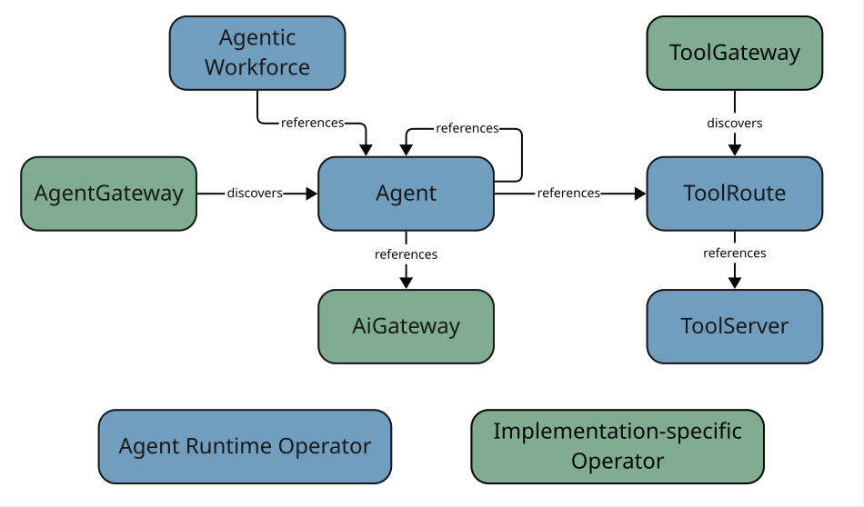

The Agent Runtime Operator
What it is
The Agent Runtime Operator is a Kubernetes operator that provides a framework-agnostic way to deploy and manage agentic workloads. It introduces a set of Custom Resource Definitions (CRDs) — Agent, AgenticWorkforce, AgentGateway, ToolServer, ToolRoute, and others — that let platform teams describe agentic infrastructure declaratively, without coupling their configuration to any single agent framework or gateway implementation.
Why it exists
Running LLM-based agents in Kubernetes without an operator means maintaining ad-hoc Deployments, Services, and config maps for each agent, duplicating boilerplate across teams, and hand-rolling the plumbing that connects agents to tool servers and gateways. As the number of agents grows, this approach does not scale: there is no consistent model for discoverability, no single place to set cluster-wide defaults, and no abstraction layer that separates the "what" (an agent’s behaviour) from the "how" (the runtime it runs on).
The Agent Runtime Operator solves this by owning the CRDs that define the agentic layer’s resource model. Platform teams declare an Agent resource; the operator reconciles the corresponding Deployment, Service, and readiness probes automatically, applying framework-specific defaults without requiring application developers to understand them.
A second motivation is compliance. In larger organisations, traffic to LLM providers and external tools must flow through approved gateways — for audit logging, data-residency controls, or model-licence enforcement. Because the operator models those gateways as first-class CRDs (AiGateway, AgentGateway, ToolGateway) that agents reference declaratively, cluster administrators can enforce gateway usage through admission policies rather than trusting each agent container to call the right endpoint.
How it fits
The operator occupies the bottom of the agentic layer stack. It owns the CRD schemas and is the single source of truth for the API group runtime.agentic-layer.ai. Other operators — such as the Agent Gateway KrakenD Operator or a ToolGateway implementation — watch the same API group but reconcile only the resources they own (for example, AgentGateway or ToolRoute). This separation of concerns means each implementation operator can evolve independently while sharing a common resource model.

runtime.agentic-layer.ai API group and the operators that reconcile themThe diagram shows how the CRDs reference each other and which operator reconciles each one. The Agent Runtime Operator owns every CRD in the group, but only directly reconciles a subset — Agent, AgenticWorkforce, and ToolServer — together with AgentRuntimeConfiguration (not shown). The gateway-shaped CRDs (AgentGateway, AiGateway, ToolGateway) and ToolRoute are reconciled by implementation-specific operators that plug into the same API group via their corresponding *Class resources. See AgentGateway and the Gateway/Class Pluggability Pattern for the pluggability pattern shared by all three gateway CRDs.
AgentRuntimeConfiguration is a cluster-scoped defaults object that lives in the operator’s own namespace. It lets a platform administrator set the default agent framework and pin template image versions once, rather than repeating those values in every Agent manifest. Individual Agent resources can always override the defaults by specifying their own framework or image fields.
The architecture overview at Agentic Layer Architecture shows how the operator relates to gateways, tool servers, and the broader Agentic Layer.
Trade-offs and alternatives
Namespace-scoped AgentRuntimeConfiguration vs. cluster-scoped: A cluster-scoped configuration object would span all namespaces but introduce RBAC complexity (cluster-admin required to change defaults). The namespace-scoped design confines the configuration to the operator’s own namespace, where operators already have full access, and limits the blast radius if the configuration is misconfigured. It also leaves room for per-namespace overrides in the future: an additional AgentRuntimeConfiguration in a tenant namespace could refine the operator-level defaults for agents in that namespace without requiring cluster-wide changes.
Framework abstraction vs. direct container spec: The framework field on Agent allows the operator to inject a known-good container image and runtime settings automatically. This is more opinionated than letting every team manage their own images, but it dramatically reduces the per-agent boilerplate and ensures consistent framework upgrades across the cluster.